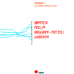
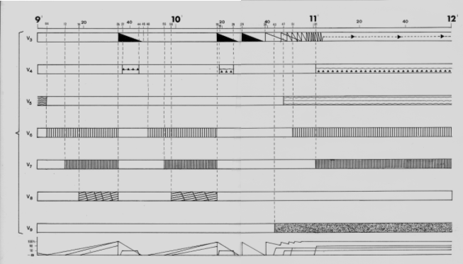
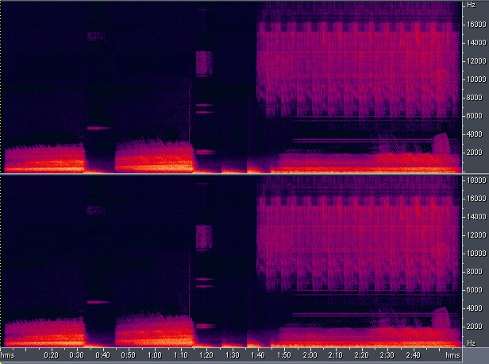

Voicings può dirsi il vero punto di partenza dell'attività compositiva.
Il brano trae origine, anche in questo caso, dall'esplorazione di un materiale
sonoro generato elettronicamente, basato essenzialmente su una somma di 9
oscillatori intonati circa all'unisono con forme d'onda triangolari, quadre
e a rampa. All'epoca della composizione, il LEMS era provvisto di 4 generatori
di funzioni HP, 3 Wavetek e un sintetizzatore VCS3: incluso l'LFO del VCS3
facevano 10 oscillatori (appena uno in più dello Studio di Fonologia della
Rai di Milano). La relativa instabilità di frequenza dei dispositivi e la
voluta imprecisione nell'impostazione della stessa produceva un suono corale
di grande interesse che produceva un pattern di battimenti piuttosto complesso.
Il suono iniziale (fondamentale c.a.: 152 Hz ) veniva poi modificato timbricamente
dal filtro LP risonante del VCS3 attraverso una scansione molto lenta della
frequenza di risonanza e un Q piuttosto elevato. In pratica, parte della sezione
di apertura è rappresentata da questo "gesto" esplorativo operato con il filtro.
Tutto il brano è derivato da questo materiale iniziale elaborato progressivamente
fino ad ottenere complessivamente 11 varianti (voci). L'idea era quella di
costruire un microcosmo sonoro ai confini tra l'espressività strumentale e
quella strettamente elettronica servendosi delle tecniche di quest'ultima per
esprimere il concetto di "circolarità dello spazio e del tempo, nei quali la
realtà ( concreta e astratta) vive e si trasforma continuamente, lasciando
dietro sè l'eco delle sue molteplici "voci"....
La metafora della trasformazione viene traslata sul piano sonoro attraverso
un processo di rielaborazione "recursiva" del materiale continuamente generato
adottando allo stesso tempo un criterio di selezione che producesse modificazioni
graduali. Nella parte conclusiva del brano viene utilizzato il glissato continuo
con chiara ispirazione al glissato infinito di Risset e Shepard, anche se realizzato
empiricamente attraverso 3 anelli di nastro controllati manualmente dal mixer.
Il titolo è ancora una volta un gioco di parole tra l'evocazione della parola
"voce" e il termine impiegato nella pratica jazzistica che indica la qualità
dell'armonizzazione (disposizione delle parti, distribuzione, concatenazione, ecc..)
Tecnicamente, il lavoro è stato realizzato facendo ampio uso dell'accumulazione
magnetica, della retrogradazione dei materiali e della variazione di velocità
di scorrimento del nastro. Alcuni elementi di controllo (funzioni d'inviluppo
d'ampiezza) sono generati per la prima volta all'interno del Laboratorio con
tecnica digitale facendo uso di un sistema microcompter SYM-1 (Syntertek 6502)
dotato di un convertitore a 8 bit autocostruito e di un software rudimentale
scritto in linguaggio Assembly.
Estratto della partitura
"VOICINGS" (per nastro magnetico a 2 tracce) - Estratto di partitura dal minuto 9 al minuto 12

In questa pagina sono visibili 7 delle 11 voci. Si può notare come ciascuna voce
(corrispondente allo stesso materiale) viene rappresentato con una simbologia
invariata. Per la voce 3 (V3) viene evidenziata l'articolazione stilizzata degli
inviluppi. Sotto è riportato il sonogramma.

Nell'ultima riga della partitura sono riportati gli andamenti
(in dB) dell'ampiezza delle singole voci. Ciò riconduce
inequivocabilmente alla rappresentazione grafica presente
in Studio II di K. Stockhausen.
La prima esecuzione di Voicings risale al 1982 al V Festival di Musica Verticale
( Sala Casella - 1982 - ROMA ) .
Il brano ha ottenuto una Menzione d'Onore all'11° International Electroacoustic Music
Competition di Bourgesn ed è stato eseguito in molte occasioni in concerto e varie volte in RAI.
E' stato pubblicato da EDIPAN per la collana IN SOUND (1) - PAN PRC S20 - 15 Stereo
Scrive di Voicings Nicola Sani: Voicings di Eugenio Giordani, conclude il primo
volume
(della collana In sound n.d.r.). .. Si tratta di un lavoro di grande maturità compositiva,
non alieno da significati evocativi piuttosto intensi. Riflette una notevole tensione
interiore ed è senz'altro il lavoro più coinvolgente di tutto l'album....